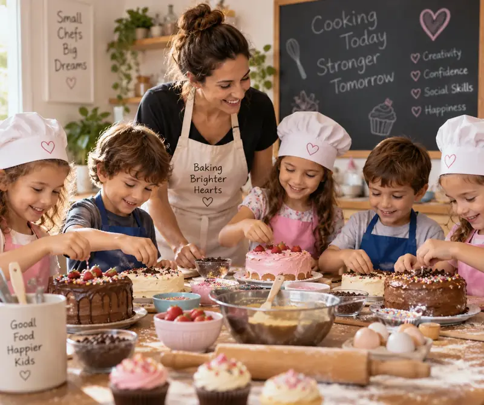

בישול ואפייה ככלי רגשי וחווייתי
המטבח הוא מקום של עשייה, בחירה, יצירתיות ותוצאה מוחשית. עבור ילדים רבים זו דרך טבעית ומהנה לתרגל מיומנויות רגשיות, חברתיות ותפקודיות תוך כדי חוויה של הצלחה.

למה בישול ואפייה יכולים לעזור בעבודה רגשית
בישול ואפייה יוצרים מסגרת ברורה: בוחרים, מתכננים, מודדים, מערבבים, ממתינים ורואים תוצאה. בתוך התהליך הזה אפשר לתרגל באופן טבעי סבלנות, התמודדות עם תסכול, קבלת החלטות, גמישות ותחושת אחריות.
היתרון הגדול הוא שהעבודה נעשית דרך פעולה ולא רק דרך שיחה. ילד שמכין בעצמו עוגה, עוגיות או מאכל אחר מקבל חוויה מוחשית של יכולת ושל השלמת משימה, ולעיתים קל יותר לפתוח דרך העשייה שיחה על רגשות, בחירות, טעויות והצלחות.
הפעילות יכולה להשתלב כמענה חווייתי משלים בהתאם לגיל, לצורך ולמטרות שנקבעו עם המשפחה ואיש המקצוע.
היתרונות האפשריים של הפעילות
איך יכול להיראות מפגש
מתחילים במשימה שמתאימה לגיל וליכולת. בוחרים מתכון פשוט וברור, מחלקים את התהליך לשלבים ומאפשרים לילד לקחת חלק פעיל ככל האפשר. איש הצוות יכול להשתמש במה שקורה בזמן אמת כדי לעבוד על המטרות שנבחרו: למשל המתנה, בקשת עזרה, התמודדות עם שינוי, שיתוף פעולה או חיזוק עצמאות.
אין צורך שהמנה תצא מושלמת. במקרים רבים דווקא ההזדמנות להתמודד עם משהו שלא יצא בדיוק כמתוכנן היא חלק חשוב מהלמידה.